Kurumsal Kimlik
Marka
Rehberi
Logo, renk, tipografi ve uygulama kuralları · Sürüm 1.0 · 2026
02 · Renk
Renk paleti
PRJ Kırmızı
- HEX
- #E30613
- RGB
- 227 6 19
- CMYK
- 0 97 92 11
- Kullanım
- Buton, bağlantı, vurgu
Kırmızı (hover)
- HEX
- #B8050F
- RGB
- 184 5 15
- CMYK
- 0 97 92 28
- Kullanım
- Üzerine gelme, basılı durum
Antrasit
- HEX
- #1C2127
- RGB
- 28 33 39
- CMYK
- 28 15 0 85
- Kullanım
- Koyu zemin, ana metin
Toz Krem
- HEX
- #FEFFB5
- RGB
- 254 255 181
- CMYK
- 0 0 29 0
- Kullanım
- Yalnızca koyu zeminde, küçük vurgu
50
100
200
300
400
500
600
700
800
900
Çelik gri skalası çizgi, zemin ve ikincil metin içindir; beyaz üzerinde metin için en az Çelik 600 kullanılır. Erişilebilirlik: PRJ Kırmızı beyazla 4,9:1, Antrasit 16:1 kontrast verir (WCAG AA ≥ 4,5:1). Logo kırmızısı #FF0000 beyazla yalnızca ~4:1 verdiği için arayüz metinlerinde ve butonlarda kullanılmaz. CMYK değerleri yaklaşıktır; basımdan önce matbaa provası alınır.
03 · Tipografi
Yazı karakterleri
Barlow Condensed Bold 700
Büyük başlık, hero, rakamAnahtar Teslim Toz Boya Tesisleri
Barlow SemiBold 600
Bölüm ve kart başlıklarıElektrostatik Toz Boya Cihazları
Barlow SemiBold 600 · büyük harf
Üst etiket (eyebrow), menüÜrünler · Hizmetler · Kurumsal
Inter Regular 400 / 600
Metin, form, tabloKeşif, projelendirme, imalat, kurulum ve servis adımlarının tamamı tek ekipten yürütülür. Teknik özellikler tablo halinde verilir.
Türkçe karakter kontrolüĞğ Şş İı Çç Öö Üü · ÇIĞ ÖNCESİ ŞİŞE
Fontlar SIL Open Font License ile ücretsizdir ve sitede kendi sunucumuzdan yayınlanır (wwwroot/fonts). Ofis belgelerinde Barlow ve Inter kurulu değilse yerine Arial kullanılır.